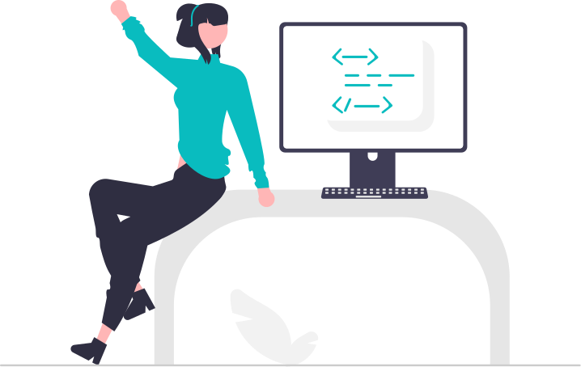
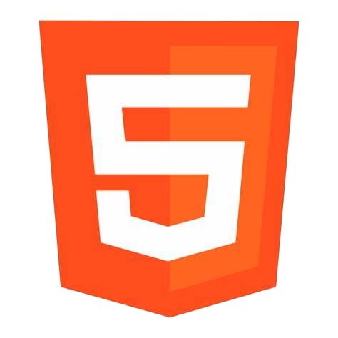
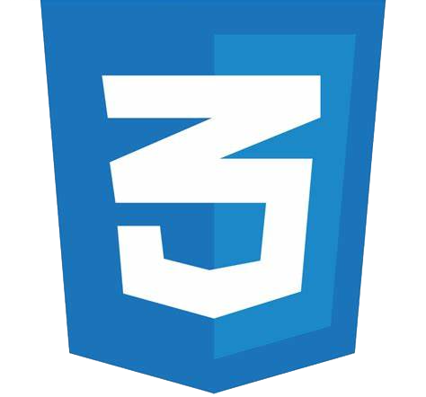
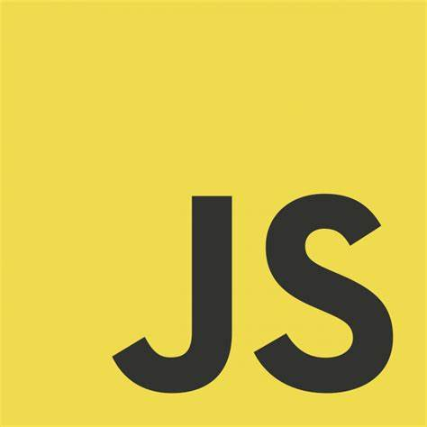
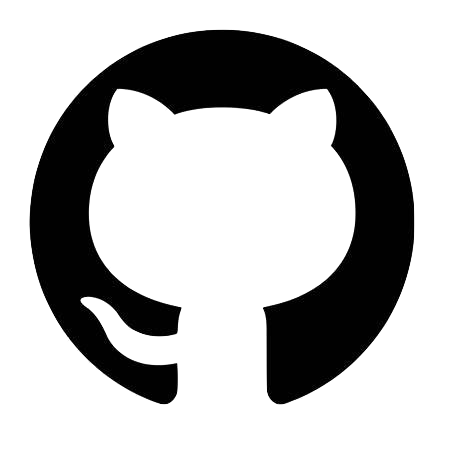
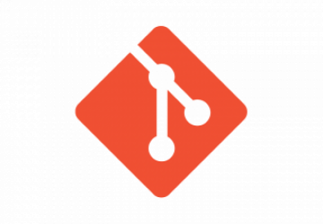
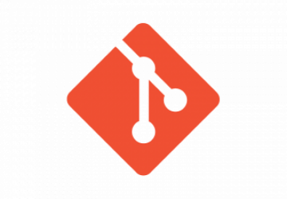
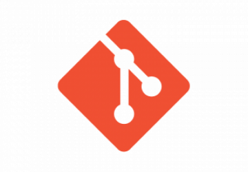
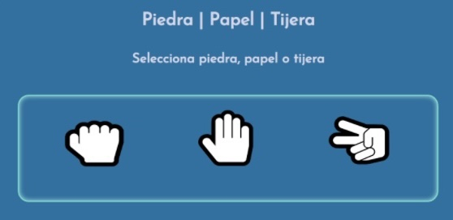
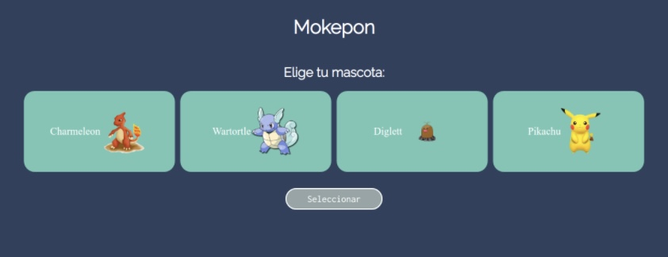

Hola soy Nancy González
Desarrolladora Front-End con gran interes de crear nuevas soluciones a problemas y a su vez crear experiencias atractias para usuarios.
Acerca de mi
Hola mi nombre es Nancy González, soy desarrolladora Front-End y estoy en busca
de mi primer oportunidad laboral en este campo.
Comencé aprendiendo programación gracias a los cursos impartidos por Platzi, entre
algunos otros sitios web más. Gracias a ellos, he tenido la oportunidad de adquirir
habilidades para resolver problemas complejos de manera efectiva, así como el saber
de diferentes tecnologías enfocadas en el desarrollo web.
Esto hizo crecer mi curiosidad y pasión por el desarrollo FrontEnd.
Me considero una persona creativa, dedicada y con capacidad de trabajo en equipo. Siempre
estoy en búsqueda de nuevos retos y oportunidades para seguir creciendo en mi carrera profesional,
así como mis conocimientos. Eso me ha permitido llevar mis habilidades al siguiente nivel.
Habilidades
Hasta la fecha son las herramientas y tecnologias que manejo





 


Proyectos

Estos son mis principales proyectos realizados
Piedra Papel o tijera
 Clasico piedra papel o tijera que cuenta los puntos optenidos .Mokepon
 Juego de combates entre personajes de Pokemon .Zapateria Marelyn
Control de inventarios de calzado. Aun en proceso de elaboración
Aun en proceso de elaboración